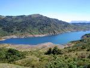
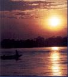

El nombre actual es una deformación del quechua Kuntur marqa (Nido del cóndor). Los conquistadores españoles al llegar a estas tierras y escuchar las dos palabras, lo interpretaron como Cundirumarca, Cuntinamarca y finalmente Cundinamarca, que en castellano vendría a significar comarca o provincia del cóndor.
"Ubicacion de Cundinamarca en Colombia. Bandera y escudo del departemento".
Cundinamarca posee 116 municipios, distribuidos en 15 provincias, y el Distrito Capital de Bogotá.
Las provincias de Cundinamarca son:
Ubique el puntero del mouse sobre la provincia que desee conocer:
Algunos de los principales municipios de Cundinamarca son Soacha, Chía, Zipaquirá, Guaduas, Girardot, Fusagasugá, Facatativá, Chocontá, Villapinzón, Cáqueza, Ubaté. de los cuales los más poblados son (Orden Alfabético): Chía, Facatativá, Fusagasuga, Girardot, Soacha, Zipaquirá, Madrid.
Por el norte con el departamento de Boyacá, por el sur con los departamentos de Meta, Huila y Tolima; y por el occidente con el río Magdalena que lo separa de los departamentos de Tolima y Caldas. Por el oriente, también limita con el departamento de Casanare.
El territorio corresponde a la Cordillera Oriental que penetra por el sur formando el Páramo de Sumapaz; en su parte media presenta la altiplanicie de la Sabana de Bogotá; y más al norte el valle de Ubaté y Simijaca. Los sectores planos y cálidos del departamento son el valle del Magdalena y la parte de los Llanos Orientales.
  Principales Rios: Magdalena, Guavío, Sumapaz, Humaca, Bogotá y Negro. Ademas Cundinamarca cuenta con algunas Lagunas y represas como Guatavita, Chingaza, Fúquene, Néusa, Sisga, Chisacá, Sibaté,Tominè, La Regadera y El Hato.
Principales Rios: Magdalena, Guavío, Sumapaz, Humaca, Bogotá y Negro. Ademas Cundinamarca cuenta con algunas Lagunas y represas como Guatavita, Chingaza, Fúquene, Néusa, Sisga, Chisacá, Sibaté,Tominè, La Regadera y El Hato.